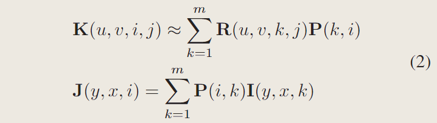
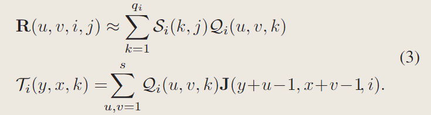
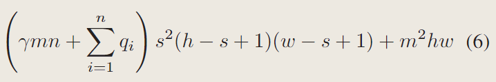
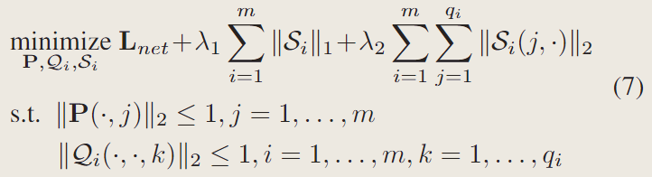
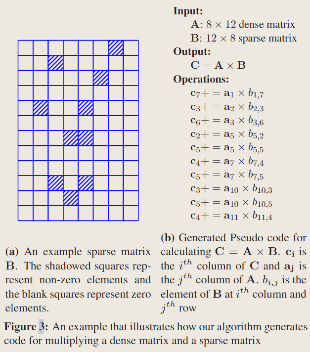

SCNN：一种卷积核的稀疏化方法以及CPU上的高效稀疏矩阵乘法

论文：Sparse Convolutional Neural Networks
作者：Baoyuan Liu, Min Wang, Hassan Foroosh, Marshall F. Tappen, Marianna Penksy
一作单位：Computational Imaging Lab, Computer Science, University of Central Florida, Orlando, FL, USA
录用情况：CVPR'2015
本文将卷积核两次分解，之后对第二次分解得到的“权重”矩阵进行稀疏化，对于ILSVRC2012数据集上训练的一个5层卷积层的网络，经过微调，在1%的性能损失下，获得了90%的稀疏率；尽管稀疏的算法在高度并行的GPU设备上并不吃香，但是对无GPU设备的加速仍有其意义，因此本文设计了在CPU上高效的稀疏矩阵乘法，获得了实质的推理加速；
方法
线性分解+稀疏化
记输入 \(I\in \mathbb{R}^{h\times w \times m}\)，原来的卷积核为 \(K \in \mathbb{R}^{s\times s \times m \times n}\)，输出为 \(O \in \mathbb{R}^{(h-s+1)\times(h-s+1)\times n}\) （stride=1, padding=0），作者将标准卷积表示为如下形式，计算复杂度为 \(O(s^2mn(h-s+1)^2)\)
\[ O(y, x, j) = \sum_{i=1}^m\sum_{u,v=1}^s K(u,v,i,j)I(y+u-1, x+v-1,i) \]
使用的第一种变换是对原卷积核 \(K\) 在通道维度上进行分解，得到 \(P\in \mathbb{R}^{m\times m}\) 和 \(R \in \mathbb{R}^{s\times s \times m \times n}\)；这样有 \(O \approx R*J\)；

第二种变换是继续将 \(R\) 进行线性分解，为第 \(i\) 个通道的 \(R(\cdot,\cdot, i, \cdot)\) 找到 \(q_i\) 个基 \(\mathcal{Q}_i\in \mathbb{R}^{s\times s\times q_i}\)，与权重 \(\mathcal{S}_i\in \mathbb{R}^{q_i\times n}\) 的线性组合得到 \(R(\cdot,\cdot, i, \cdot)\)
用 \(\mathcal{T}_i \in \mathbb{R}^{(h-s+1)\times (h-s+1)\times q_i}\) 表示变换后的输入的第 \(i\) 的通道与第 \(i\) 组基进行卷积得到的 \(q_i\) 个中间结果：

将此中间结果再与权重进行线性组合得到输出：
\[ O(y, x, j) \approx \sum_{i=1}^m \sum_{k=1}^{q_i} \mathcal{S}_i(k, j) \mathcal{T}_i(y, x, k) \]
从 \(I\) 到 \(J\) 的变换需要 \(O(m^2hw)\) 的计算；
从 \(J\) 到 \(\mathcal{T}\) 需要 \(s^2(h-s+1)^2\sum_{i=1}^mq_i\) 的计算；
最后与权重线性组合的过程可以用单个 \((h-s+1)^2\times\sum_{i=1}^m q_i\) (变形 \(\mathcal{T}\)) 和 \(\sum_{i=1}^m q_i \times n\) (变形 \(\mathcal{S}\)) 矩阵乘法得到，而我们希望权重矩阵是稀疏的（\(\gamma\) 是密集度，即非零元素占比）并使用稀疏的矩阵乘法，这样最后的稀疏矩阵乘法计算复杂度为 \(O(\gamma n(\sum_{i=1}^mq_i)(h-s+1)^2)\)；
综上，笔者得到总体的计算复杂度是： \[ (\gamma n + s^2)\left( \sum_{i=1}^m q_i \right ) (h-s+1)^2 + m^2hw \]
而原文中给的复杂度，将 \(i\) 上限错误写成了 \(n\)；在 \(q_i < s^2\) 的条件下，\(\sum_{i=1}^m q_i < ms^2\)，即我们给出的这个复杂度比原文的复杂度更“紧”；而原文的写法也更好与原卷积的计算复杂度进行比较；

不过原文对 \(i\) 的上限错误也导致其接下来的另一个小错误：与原复杂度 \(mns^2(h-s+1)^2\) 对比，希望现在的复杂度优势项是 \(\gamma mns^2(h-s+1)\)（\(\gamma\) 决定了加速比），另外两项就要相比于优势项可忽略，即 \(\sum_{i=1}^m q_i = m\overline{q} < \gamma mn\) （原文写的是 \(\overline{q} <\gamma m\)），还有 \(m \ll \gamma ns^2\)；
综上，要想在理论上对算法复杂度有改进，需要满足：
\[ \left\{ \begin{matrix} q_i < s^2\\ \overline{q} < \gamma n\\ m < \gamma ns^2 \end{matrix} \right. \]
如果了解论文Speeding up Convolutional Neural Networks with Low Rank Expansions，就会发现这里使用的kernel basis线性组合的方法与该论文的scheme1分解方法基本一致，这里在之前添加了channel basis，没有把kernel basis进一步做成可分离的，并且对于每个通道使用不同数量的kernel basis；
参数学习
接下来的问题就是，如何学习 \(P\), \(Q_i\), \(S_i\) (\(i = 1, \dots, m\))，并且让 \(S_i\) 是稀疏的？
总体步骤分为初始化和微调，在初始化阶段主要获得合适的 \(P\), \(Q_i\), \(S_i\)，使得重建误差很小，但是此时的稀疏性并不好；在微调阶段使用分类损失+稀疏正则项，对 \(S_i\) 进行稀疏化；
初始化
对 \(K\) 在 通道方向分解得到 \(R\), \(P\)；对 \(R(\cdot, \cdot, i, \cdot)\) 在个数方向上分解得到 \(S_i\), \(Q_i\)；这两种高维张量的分解都可以通过reshape转化为矩阵分解问题，因而有三种初始化方法：
- 使用字典学习算法（本文作者指出该优化是非凸的且在精度和稀疏度上有中和）；
- 使用主成分分析；
- 初始化 \(P\) 和 \(Q_i\) 为单位标准基：那么令 \(R=K\) 即可以使得 \(K(u,v,i,j) = \sum_{k=1}^m R(u, v, k, j)P(k,i)\)；不过，\(S_i\) 与 \(R(\cdot, \cdot, i, \cdot)\) 的维度不一致，如果 \(q_i \ge n\)，可以通过构造在初始化时使得 \(R(u,v,i,j) = \sum_{k=1}^{q_i} S_i(k,j)Q_i(u,v,k)\)，反之若 \(q_i < n\)，则不能；
微调
微调阶段作者主要希望在保持性能的前提下增加 \(S_i\) 的稀疏度，设计目标函数如下： 
稀疏化与低秩化的区别
设 \(M \in \mathbb{R}^{m\times n}\)，\(S \in \mathbb{R}^{m\times n}\)，\(P\in \mathbb{R}^{n \times n}\)，有矩阵分解 \(M=SP\)；对 \(S\) 进行稀疏化，相当于增多 \(S\) 的零元素个数；对 \(S\) 进行低秩化，相当于增加 \(S\) 的零列（可以由其他列线性组合得到的列）；
从性能上看，稀疏化比起低秩化损失更小；从速度上看，低秩化是结构性的，稀疏化是非结构性的，前者更便于使用现有的算子高效实现达到实际的加速目的；
稀疏的矩阵乘法
作者利用推理时模型的如下两个事实：
- 与卷积核相关的稀疏矩阵不再改变；
- 输入不是稀疏的；
在OpenBLAS上实现了一种密集卷积与稀疏卷积的算法：
对于每一个子块的乘法，\(C=A\times B\)，其中 \(A\in \mathbb{R}^{8\times k}\)，\(B\in \mathbb{R}^{k\times 8}\)，8是当时作者使用的AVX指令集最大可以并行计算的float的数量；在密集乘法中，\(C\) 的一列可以看作是 \(A\) 的一列与 \(B\) 的对应列的加权和；假设 \(A\) 是密集的，\(B\) 是稀疏的，作者通过寻找 \(B\) 中非零元素的位置，按照 \(B\) 的行列顺序，重新生成了乘法计算的代码，如下图所示：

线性层的稀疏化
可以将线性层权重分解为密集矩阵与稀疏矩阵的乘法，并选择稀疏化维度更大的那个矩阵，为了使得密集矩阵更小；
实验
在对分类模型稀疏化时，作者首先拿到已训练好的权重，之后按照前文方法修改卷积计算，进行初始化+微调，并应用阈值函数来获得稳定的稀疏；在收敛之后，去除稀疏限制（但保留阈值函数）再微调一阵以达到最佳精度；
作者在实验中比较了微调后卷积核与原来卷积核的相似度，发现从conv1到conv3，这种相似度从0.85下降到0.34，而精度没有太大损失，说明没有必要逐个卷积核地恢复，基于分类损失的全局微调很有效；
作者还比较了对基的三种初始化方式，发现他们在性能上没有显著差异，但PCA的初始化，微调后得到的稀疏度最高；接着作者发现，稀疏度与主成分有很强的相关性，越重要的成分越容易稀疏；
更多实验详见原文。